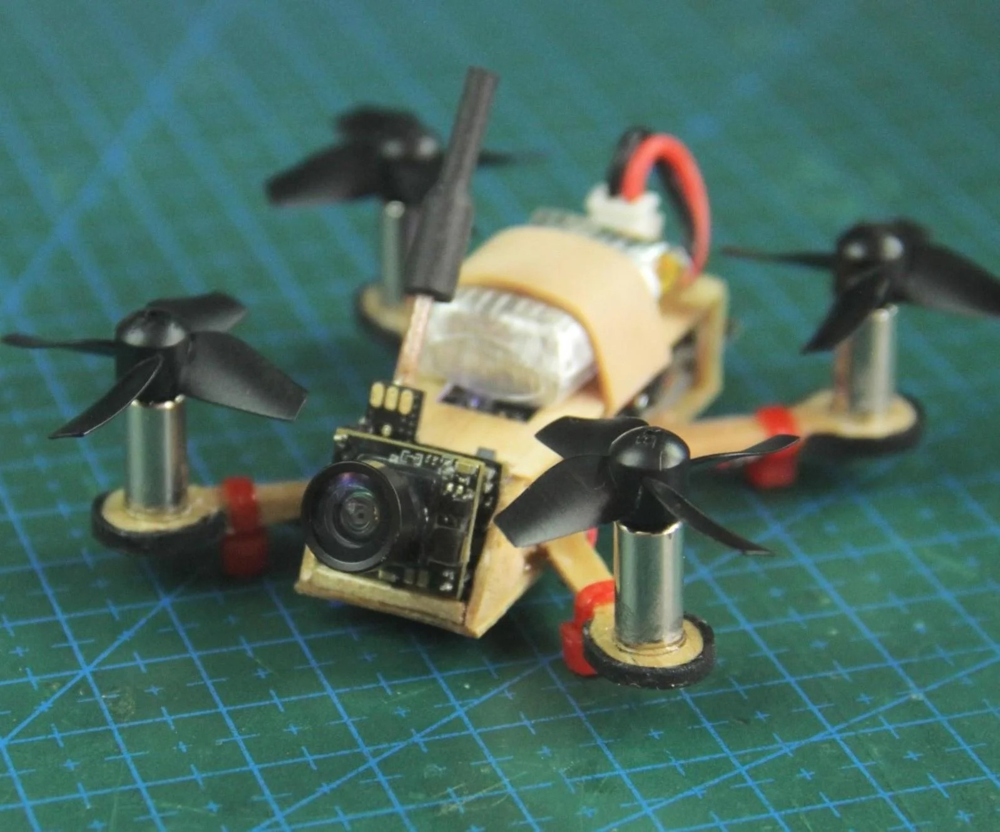
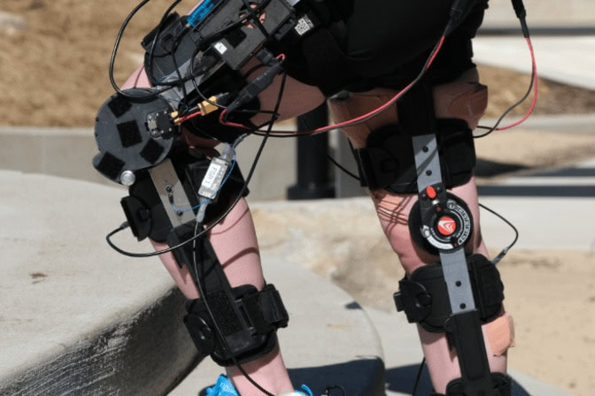
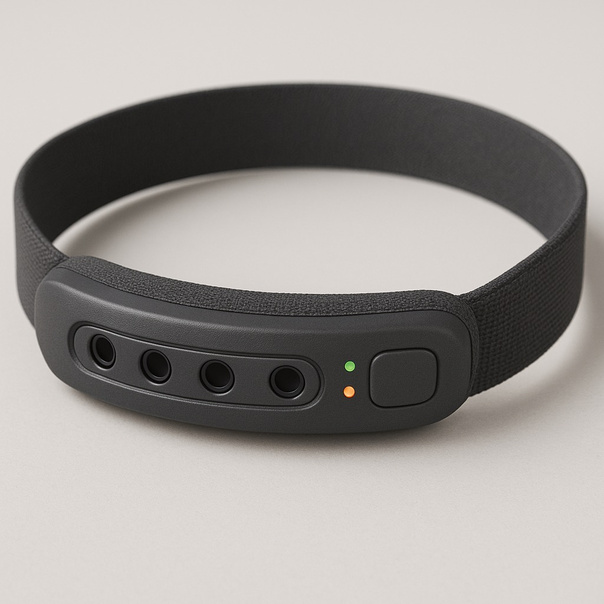

Week 01 · Intro
Final Project Proposal
Three ideas I was considering for my final, before I picked one.
Idea 1: Mini Drone
I've built FPV drones before so I already know what goes into flying one, but this version would be different because I'd be designing the whole frame and the radio transmitter from scratch instead of just bolting together off the shelf parts. The plan is a small quadcopter with a 3D printed frame, some laser cut or CNC cut structural parts where the frame needs to be stiffer, 4 brushless motors, and a LiPo battery doing the heavy lifting. Stabilization would come from a flight controller running basic PID off an IMU, nothing fancy.
If I had time at the end I'd add a small FPV camera and a couple of LEDs on the arms so I can tell which way is forward in the dark. The hard part isn't really the flying, it's getting the all up weight low enough that the battery can actually keep it airborne for more than 30 seconds. This one would hit electronics, digital fabrication, and a decent amount of code, which is why it was attractive as a final project.

Idea 2: Charging Device Powered by Walking
This is the one I'm most into because it lines up with the eco-friendly side of things I actually care about. The device straps to your leg with a brace, and every time you bend your knee while walking the brace turns a pulley that spins a small DC motor. Motors and generators are the same machine running in reverse, so spinning the shaft produces a voltage on the terminals, and from there the AC the motor generates gets sent through a rectifier to flatten it into DC, then a voltage regulator brings it to a usable level, and finally it gets stored in a small battery or fed straight into whatever the user plugs in.
The biggest engineering question is the gear ratio. A walking pace bends the knee maybe 1 or 2 times per second, but most small DC motors need hundreds or thousands of RPM to make a meaningful voltage, so there'd need to be a multi stage pulley reduction or some other way to crank up the rotational speed. The end goal is to make usable electricity out of movement that's already happening anyway, with no extra effort from the person wearing it.

Idea 3: Walking Device for the Blind
This one came from thinking about what would actually be useful for somebody who can't see. A compact head strap, basically a thin headband, with an ultrasonic distance sensor pointing forward and a small speaker that plays a tone that gets faster (or louder) as the user gets closer to an obstacle. So someone walking down the sidewalk gets audio feedback when they're about to bump into something a cane wouldn't catch, like a low tree branch or an open cabinet door.
The strap and housing would be 3D printed, with the electronics being a microcontroller, the distance sensor, a small speaker, and a battery. The fabric strap part has to be soft and adjustable for daily use, because if it's uncomfortable nobody will actually wear it. The point is to give blind users an extra layer of awareness on top of what they already use, not to replace anything.

Where I ended up
I went with the leg charger. The drone was tempting but I've already built that kind of thing so it felt like a side step, and the headset for the blind would need real user testing to be worth doing properly, which is outside the scope of a few weeks. The energy harvesting brace is the one I'd never built before and the one I keep thinking about, so it won.